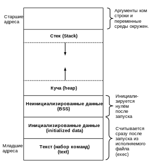
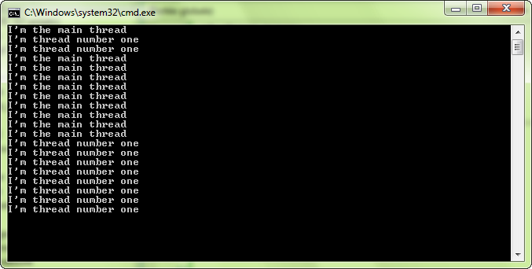
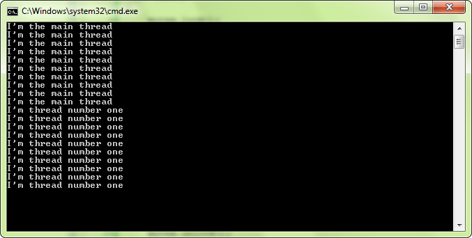

Процесс — программа, которая выполняется в текущий момент. Стандарт ISO 9000:2000 определяет процесс как совокупность взаимосвязанных и взаимодействующих действий, преобразующих входящие данные в исходящие.
Компьютерная программа сама по себе — лишь пассивная последовательность инструкций. В то время как процесс — непосредственное выполнение этих инструкций.
Также, процессом называют выполняющуюся программу и все её элементы: адресное пространство, глобальные переменные, регистры, стек, открытые файлы и так далее.
Обычно, процесс в вычислительной системе представлен (также говорят, «владеет») следующими ресурсами:
Контекст текущего процесса выгружается в память, когда выполняется переключение на другой процесс.
Операционная система хранит большую часть информации о процессах в таблице процессов.
В операционных системах, поддерживающих потоки выполнения (нити), потоки также владеют собственными ресурсами. Обычно это только состояние процессора, хотя потоки могут использовать и другие ресурсы.
Для снижения вероятности влияния процессов друг на друга и вероятности отказа системы (например, взаимных блокировок или пробуксовки) операционная система обеспечивает изоляцию процессов и выделяет необходимые им ресурсы. Также операционная система предоставляет механизмы для взаимодействия процессов безопасными и предсказуемыми способами.

Рис. 4.1. Завершение процесса
Минимум 2 этапа завершения:
Причины завершения процесса:
Поток — это по сути последовательность инструкций, которые выполняются параллельно с другими потоками. Каждая программа создает по меньшей мере один поток: основной, который запускает функцию main (). Программа, использующая только главный поток, является однопоточной; если добавить один или более потоков, она станет многопоточной.
Потоки — это способ сделать несколько вещей одновременно. Это может быть полезно, например, для отображения анимации и обработки пользовательского ввода данных во время загрузки изображений или звуков. Потоки также широко используется в сетевом программировании, во время ожидания получения данные будет продолжаться обновление и рисование приложения.
В своей последней версии (2011), стандартная библиотека C++ предоставляет набор классов для работы с потоками. Во время написания SFML, стандарт C++11 еще не был написан и не было никакого стандартного способа создания потоков. Когда SFML 2.0 был выпущен, было много компиляторов, которые не поддерживали этот новый стандарт.
Если вы работаете с компилятором, который поддерживает новый стандарт и содержит заголовочный файл, забудьте о классах потоков SFML и используйте стандартные классы C++ вместо них. Но, если вы работаете с компилятором, не поддерживающим данный стандарт, или планируете распространять ваш код и хотите добиться полной портируемости, потоковые классы SFML являются хорошим выбором.
Давайте посмотрим на код. Класс, дающий возможность создавать потоки с помощью SFML, называется sf::Thread, и вот как это (создание потока) выглядит в действии:
#include <SFML/System.hpp>
#include <iostream>
void func()
{
//эта функция запускается, когда вызывается thread.launch()
for (int i = 0; i < 10; i++)
std::cout«"I'm thread number one"« std::endl;
}
int main()
{
//создание потока с функцией func в качестве точки входа
sf::Thread thread(&func);
//запуск потока
thread.launch();
//главный поток продолжает быть запущенным...
for (int i = 0; i < 10; i++)
std::cout«"I'm the main thread"« std::endl;
return 0;
} В этом коде функции main и func выполняются параллельно после вызова thread.launch(). Результатом этого является то, что текст, выводимый обеими функциями, смешивается в консоли.

Рис. 4.2. Результат
Точка входа в поток, т.е. функция, которая будет выполняться, когда поток запускается, должна быть передана конструктору sf::Thread. sf::Thread пытается быть гибким и принимать различные точки входа: non-member функции или методы классов, функции с аргументами или без них, функторы и так далее. Приведенный выше пример показывает, как использовать функцию-член, вот несколько других примеров.
//non-member функция с одним аргументом:
void func(int x)
{
}
sf::Thread thread(&func, 5);
//метод класса:
class MyClass
{
public:
void func()
{}};
MyClass object;
sf::Thread thread(&MyClass::func, &object);
//функтор (функциональный объект):
struct MyFunctor
{
void operator()
{}
};
sf::Thread thread(MyFunctor());Последний пример, который использует функтор, является наиболее мощным, поскольку он может принимать любые типы функторов и поэтому делает класс sf::Thread совместимым со многими типами функций, которые напрямую не поддерживаются. Эта функция особенно интересна с лямбда-выражениями C++ или std::bind.
//с лямбда-функцией
sf::Thread thread([](){
std::cout« "I am in thread!" « std::endl;
});
// cstd::bind
void func(std::string, int, double)
{
}
sf:Thread thread(std::bind(&func, "hello", 24, 0.5));Если вы хотите использовать sf::Thread внутри класса, не забудьте, что он не имеет стандартного конструктора. Поэтому, вы должны инициализировать его в конструкторе вашего класса в списке инициализации.
После того, как вы создали экземпляр sf::Thread, вы должны запустить его с помощью запуска функции.
sf::Thread thread(&func); thread.launch();
launch вызывает функцию, которую вы передали вконструктор нового потока, и сразу же завершает свою работу, так что вызывающий поток может сразу же продолжить выполнение.
Поток автоматически завершает свою работу, когда функция, служащая точкой входа для данного потока, возвращает свое значение. Если вы хотите ждать завершения потока из другого потока, вы можете вызвать его функцию wait.
sf::Thread thread(&func); // запускпотока thread.launch(); ... // выполнение блокируется до тех пор, пока поток не завершится thread.wait();
Функция ожидания также неявно вызывается деструктором sf::Thread, так что поток не может оставаться запущенным (и бесконтрольным) после того, как его экземпляр sf::Thread уничтожается. Помните это, когда вы управляете вашими потоками.
В SFML нет функции, которая бы предоставляла способ приостановки потока; единственный способ приостановки потока — сделать это из кода самого потока. Другими словами, вы можете только приостановить текущий поток. Что бы это сделать, вы можете вызвать функцию sf::sleep:
void func()
{
...
sf::sleep(sf::milliseconds(10));
...
} sf::sleep имеет один аргумент — время приостановки. Это время может быть выражено в любой единице, как было показано в статье про обработку времени.
Обратите внимание, что вы можете приостановить любой поток с помощью данной функции, даже главный поток.
sf::sleep является наиболее эффективным способом приостановить поток: на протяжении приостановки потока, он (поток) практически не потребляет ресурсы процессора. Приостановка, основанная на активном ожидании, вроде пустого цикла while, потребляет 100% ресурсов центрального процессора и делает… ничего. Однако имейте в виду, что продолжительность приостановки является просто подсказкой; реальная продолжительность приостановки (больше или меньше указанного вами времени) зависит от ОС. Так что не полагайтесь на эту функцию при очень точном отсчете времени.
Все потоки в программе разделяют некоторую память, они имеют доступ ко всем переменным в области их видимости. Это очень удобно, но также опасно: с момента параллельного запуска потока, переменные или функции могут использоваться одновременно разными потоками. Если операция не является потокобезопасной, это может привести к неопределенному поведению (т. е. это может привести к сбою или повреждению данных).
Существует несколько программных инструментов, которые могут помочь вам защитить разделяемые данные и сделать ваш код потокобезопасным, их называют примитивами синхронизации. Наиболее распространенными являются следующие примитивы: мьютексы, семафоры, условные переменные и спин-блокировки. Все они — варианты одной и той же концепции: они защищают кусок кода, давая только определенному потоку право получать доступ к данным и блокируя остальные.
Наиболее распространенным (и используемым) примитивом является мьютекс. Мьютекс расшифровывается как «Взаимное исключение». Это гарантия, что только один поток может выполнять код. Посмотрим, как мьютексы работают, на примере ниже:
#include <SFML/System.hpp>
#include <iostream>
sf::Mutexmutex;
void func()
{
mutex.lock();
for (int i = 0; i < 10; ++i)
std::cout« "I'm thread number one" « std::endl;
mutex.unlock();
}
int main()
{
sf::Thread thread(&func);
thread.launch();
mutex.lock();
for (int i = 0; i < 10; ++i)
std::cout<< "I'm the main thread" « std::endl;
mutex.unlock();
return 0;
} Этот код использует общий ресурс (std::cout), и, как мы видим, это приводит к нежелательным результатам. Вывод потоков смешался в консоли. Чтобы убедиться в том, что вывод правильно напечатается, вместо того, чтобы быть беспорядочно смешанным, мы защищаем соответствующие области кода мьютексом.
Первый поток, который достигает вызова mutex.lock(), блокирует мьютекс и получает доступ к коду, который печатает текст. Когда другие потоки достигают вызова mutex.lock(), мьютекс уже заблокирован, и другие потоки приостанавливают свое выполнение (это похоже на вызов sf::sleep, спящий поток не потребляет время центрального процессора). Когда первый поток разблокирует мьютекс, второй поток продолжает свое выполнение, блокирует мьютекс и печатает текст. Это приводит к тому, что текст в консоли печатается последовательно и не смешивается.

Рис. 4.3. Результат
Мьютекс — это не только примитив, который вы можете использовать для защиты разделяемых данных, вы можете использовать его во многих других случаях. Однако, если ваше приложение делает сложные вещи при работе с потоками, и вы чувствуете, что возможностей мьютексов недостаточно — не стесняйтесь искать другую библиотеку, обладающую большим функционалом.
Не волнуйтесь: мьютексы уже потокобезопасны, нет необходимости их защищать. Но они не безопасны в плане исключений. Что происходит, если исключение выбрасывается, когда мьютекс заблокирован? Он никогда не может быть разблокирован и будет оставаться заблокированным вечно. Все потоки, пытающиеся разблокировать заблокированный мьютекс, будут заблокированы навсегда. В некоторых случаях, ваше приложение будет «заморожено».
Чтобы быть уверенным, что мьютекс всегда разблокирован в среде, в которой он (мьютекс) может выбросить исключение, SFML предоставляет RAII класс, позволяющий обернуть мьютекс в класс sf::Lock. Блокировка происходит в конструкторе, разблокировка происходит в деструкторе. Просто и эффективно.
sf::Mutex mutex;
void func()
{
sf::Lock lock(mutex); // mutex.lock()
functionThatMightThrowAnException(); // mutex.unlock(), если функция выбросит исключение
} // mutex.unlock()Помните, что sf::Lock может также быть использован в функциях, которые имеют множество возвращаемых значений.
sf::Mutexmutex;
bool func()
{
sf::Lock lock(mutex); // mutex.lock()
if (!image1.loadFromFile("..."))
return false; // mutex.unlock()
if (!image2.loadFromFile("..."))
return false; // mutex.unlock()
if (!image3.loadFromFile("..."))
return false; // mutex.unlock()
return true;
} // mutex.unlock()Вещь, часто упускаемая из виду: поток не может существовать без соответствующего экземпляра sf::Thread. Следующий код можно часто увидеть на форумах:
void startThread()
{
sf::Thread thread(&funcToRunInThread);
thread.launch();
}
int main()
{
startThread();
// ...
return 0;
}
Программисты, которые пишут подобный код, ожидают, что функция startThread() будет запускать поток, который будет жить самостоятельно и уничтожаться при завершении выполнения функции (переданной в качестве точки входа). Этого не происходит. Функция потока блокирует главный поток, как если бы программа не работала.
В чем дело? Экземпляр sf::Thread является локальным для функции startThread(), поэтому немедленно уничтожаются, когда функция возвращает свое значение. Вызывается деструктор sf::Thread, происходит вызов wait(), как утверждалось выше, результатом этого становится блокировка главного потока, который ожидает завершения функции потока, вместо параллельного выполнения с ней.
Так что не забывайте: вы должны управлять экземплярами sf::Thread, чтобы они жили так долго, как требуется функции потока.
Синхронизация в информатике обозначает одно из: синхронизацию процессов, либо синхронизацию данных, либо процесс синхронизации передачи данных.
Синхронизация процессов — это механизм, позволяющий обеспечить целостность какого-либо ресурса (файл, данные в памяти), когда он используется несколькими процессами или потоками в случайном порядке. Для синхронизации процессов и потоков используются семафоры, мьютексы и критические секции. Альтернативой синхронизации может служить модель акторов или транзакционная память.
Синхронизация данных - ликвидация различий между двумя копиями данных. Предполагается, что ранее эти копии были одинаковы, а затем одна из них, либо обе были независимо изменены.
Способ синхронизации данных зависит от делаемых дополнительных предположений. Главной проблемой тут является то, что независимо сделанные изменения могут быть несовместимы друг с другом (так называемый «конфликт правок»), и даже теоретически не существует общего способа разрешения подобных ситуаций.
Тем не менее, есть ряд частных способов, применимых в тех или иных случаях:
Одним из механизмов синхронизации данных является репликация, которая в частности находит применение для синхронизации содержимого баз данных.
Синхронизация передачи данных - процесс, при котором приемник синхронизируется с передатчиком в процессе передачи цифровых данных.
Применение суперЭВМ налагает особые требования на вновь создаваемые программные средства, обеспечивающие надежную и экономичную реализацию алгоритма при решении прикладных задач. Эффективность использования супер ЭВМ проявляется при создании сложных исследовательских комплексов и экспертных систем.
Написать эффективную параллельную программу намного труднее, чем последовательную. Создание программного обеспечения для параллельных компьютеров - это центральная проблема суперкомпьютерных вычислений.
Частично проблема выбора оптимального числа параллельных ветвей в соответствии с критерием минимума суммарных затрат времени может быть решена в автоматах генерации параллельной программы.
Эффективность использования многопроцессорных вычислительных систем в значительной мере определяется качеством прикладных параллельных программ. Программа считается эффективной, когда во время ее выполнения загружены все процессоры, выделенные под процессы. Но практически это не реализуемо.
Отметим, что идеальная параллельная программа обладает следующими свойствами:
Увеличение степени эффективности параллелизма (уменьшение временных затрат на накладные расходы) достигается следующими способами:
Основные этапы самого процесса адаптации программ к архитектуре параллельных компьютеров, а также описание задач, возникающих на каждом из этих этапов, представлены в статье Антонова А.С. "Эффективная адаптация последовательных программ для современных векторно-конвеерных и массивно- параллельных супер-ЭВМ". На некоторые из задач, с которыми столкнулись авторы проведенного исследования, хотелось бы обратить особое внимание. Среди них:
Отметим, что решение этих задач позволяет осуществить эффективный перенос последовательной программы на параллельную архитектуру.
Процесс разработки параллельной программы очень длителен и трудоемок, не смотря на то, что, как правило, на момент ее создания уже имеется реализация ее "последовательного" аналога. Обычно программа разрабатывается на машине с одной архитектурой, а ее практическое применение производится на другой, с отличной от первой топологией, но при этом более мощной. Такой подход позволяет экономить машинное время на более мощных суперЭВМ, число которых на порядок меньше, по сравнению с более дешевыми моделями суперкомпьютеров.
При переносе параллельной программы на машины с различной архитектурой перед программистом встает проблема неработоспособности однажды разработанных параллельных процедур.
На сегодняшний день не существует универсальных средств адаптации программ к конкретной архитектуре суперЭВМ, поэтому большую часть этой проблемы приходится решать вручную, что делает процесс очень трудоемким. Для облегчения труда программиста в математических институтах РАН разрабатываются библиотеки эффективных процедур и алгоритмов под конкретные архитектуры суперЭВМ (УРО РАН, НИВЦ МГУ им. М.В.Ломоносова). Обращение к этим библиотекам может частично облегчить труд программиста-прикладника не только на этапе модификации программы под более мощные суперЭВМ, но и на этапе первичной разработки параллельной программы.